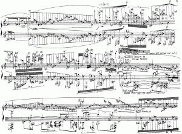
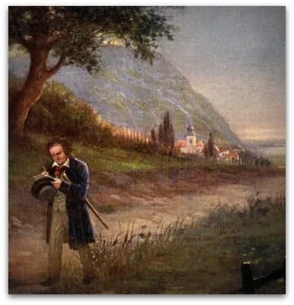

Anton Hagen is a multilingual writer from the UK whose joys and woes living in different parts of Europe inspired him to contribute philosophical pieces to the manosphere, with the odd caustic joke.


We live in an age of boredom, lack of fulfillment and wasted time. Modern culture has become so idle that pursuing a hobby intensively is almost considered to be “a bit weird” and a little old-fashioned. On the other hand, loitering around a public square with a Frappuccino in hand gossiping to your “female friends” is seen to be far more appealing.
It is therefore most welcoming when we are encouraged to take up a new hobby. Masculine pursuits, especially barbell training are slowly becoming outdated, yet are essential to cultivating a strong identity.
It is for this reason that classical music should be considered as a viable option for any aspiring man. Undoubtedly, there have been astounding feats in popular music as has been written about here and here. But with the constant supply of bilge we are subjected to, the more traditional form of music may well be a more suitable form of expression.
Let us examine five reasons to take up classical music performance.

First of all, we must concede that this hobby is extremely challenging. The amount of skill it takes to perform the most difficult of pieces takes years and sometimes decades of practice.
The mindset required to persevere with classical music is one of great patience, attention to detail, and robust resilience. Mastering the fickle intonation of a stringed instrument for example can be frustrating and many young players give in early, failing to endure the perpetual squeaking and lack of quick progress.
But the rewards for continuing are great: there is no version of a piece of music in the world better than the one which you play correctly yourself. Furthermore, the days of hard labour show themselves clearly in other pursuits, such as work, sport, or game.
Wilhelm Furtwangler faced an array of accusations of Nazism and criticism throughout his illustrious career
The average millennial is frightfully dull, lacking in personality or depth, square-eyed and pasty-faced. This is largely down to the fact that there is no incentive to put effort into anything: our living standards are high, technology provides us with a pain-free world, and being uptight and determined is simply not favorable any more.
The most interesting people have lived, suffered, and toiled. Soldiers of war, craftsmen and journeymen provide us with the greatest stories and perspectives of life which many cannot fathom. That which links the above examples is experience, and experience requires effort.
The process of learning and working nurtures a personality and a person worth hearing about. Men are inspired by and women attracted to an achievement one has worked at for a long period of time. Becoming a classical musician is a great antidote to the uninspiring norm.
A key way that one becomes more interesting through classical music is the ability to convey certain ideas and emotions through sound which are less accessible through prose or images.
Classical music still remains to this day one of the most effective ways of truly understanding the atmosphere and emotion of ages lost. Nothing can portray the burning spirit of patriotism like the booming brass section of a marching band, or the subtleties of a country’s rural culture like a European folk song.
The modern age is almost devoid of any profound emotion and its people only respond well to clown-like routines or minute-long Youtube gags. Behind this superficiality is real meaning, and to gain access to it is both fulfilling and respectable.
Classical music is traditional in every positive sense of the word. It is not particularly surprising that it has little place in a decaying civilisation. Leftists and Philistines have even threatened on occasion to drag this noble practice down to their level. We saw this recently in 2013 where the distinguished conductor Valery Gergiev was confronted with ludicrous accusations of homophobia by Gay Rights supporters.
Despite this feeble opposition, classical music’s long standing traditions soldier stubbornly on. We see this most clearly in opera and dance, which could not have flourished in a SJW-infested world. As has been written before here and here, dancing relies upon strict gender roles to be the best it can be: the man leads, the woman follows in his step.
Opera is very similar: Wagner’s operas would be nonsensical without its strong, masculine heroes. Italian Opera buffa would be not be allowed to be written nowadays because of its misogyny humor and the tradition would be cast into the dustbin of history.

Arguably the most important reason of the five to take up Classical Music is to escape the senseless drudgery of life. The stories of Ludwig Van Beethoven wandering across German pasture writing his Pastoral Symphony and Jean Sibelius’ long stays in his country cabin still remain well-known today
By taking up classical music, we follow in the footsteps of those who opened their minds to something far beyond the mundane. It has inspired people over the centuries right up until the modern day: the waiting list for the Bayreuth festival, celebrating the music of Richard Wagner, can last up to ten years.
It is an indulgence far greater than drugs or idleness and will continue to be so for many centuries, and perhaps millennia to come (if humanity gets that far).
Classical Music is the perfect compliment to a modern man yearning for tradition, depth, and aesthetic beauty. Undertaking it will transform him into something greater and provide him with fulfilment and most importantly, pleasure. Finally, let us end with some class:
Read More: 5 Things Wrong With Modern Music